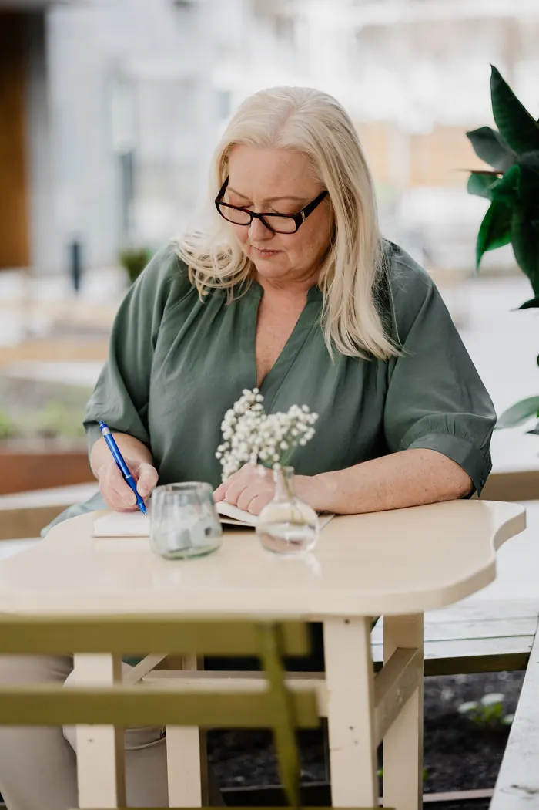

Hei, jeg heter Nina Merete
Jeg har jobbet med ledelse, læring og utvikling av mennesker i over 30 år. I dag jobber jeg med møter i arbeidslivet, og med dem som leder dem.

Gode møter skjer ikke av seg selv
For meg handler fasilitering ikke først og fremst om teknikker og modeller. Det handler om å skape rom der mennesker faktisk tenker sammen, tar ansvar og beveger arbeidet videre.
Den røde tråden i karrieren min har alltid vært formidling, læring og kompetanseutvikling. Jeg har sett hva som skjer når møter ledes godt, og hva som skjer når de ikke gjør det. Forskjellen ligger sjelden i vilje, men i struktur, tydelighet og trygg ledelse.
Jeg har en master i utdanningsledelse fra Universitetet i Oslo, lærerutdanning i bunn og er sertifisert prosess- og prosjektleder. Etter mange år som lærer og over ti år som rektor i Osloskolen har jeg de siste årene arbeidet med leder- og kompetanseutvikling i både offentlig og privat sektor.
I arbeidet mitt kombinerer jeg faglig tyngde med enkle, konkrete grep som fungerer i praksis.

Litt mer om hvem jeg er
Med hjertet i Hallingdal
Til daglig er jeg regional utviklingsveileder i Hallingdal, der jeg bidrar til kvalitetsutvikling i barnehager og skoler. Jeg henter energi i fjell, snø og store horisonter.
Fagbokforfatter
Jeg skriver en praktisk fagbok om møteledelse og fasilitering. Boka handler om hvordan vi kan planlegge og lede møter og workshops som skaper engasjement, gode diskusjoner og framdrift.
Jeg ønsker å gjøre fagkunnskap og metoder tilgjengelig og anvendelig for alle som leder møter og prosesser.
Høyskolelektor
Jeg er timelærer ved Kristiania, der jeg underviser bachelorstudenter i ledelse og organisasjon.
Spørsmål? Jeg hører gjerne fra deg.
Enten du lurer på noe eller vil snakke om et konkret behov, send meg en melding.
Eller send en e-post til kontakt@ninamerete.no